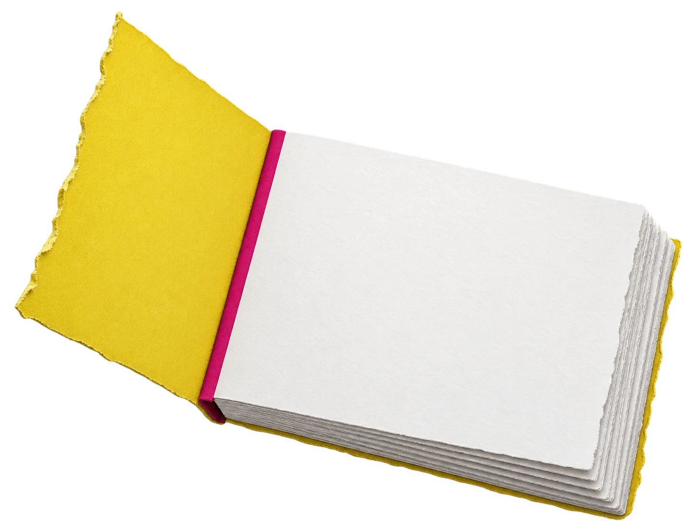

flick.
Small moves.
Big personality.
YOUR NOTE TO FLICK

A LITTLE STUDY IN MOVEMENT18 / 18
Drag to inspect a pose. Your 18 prepared frames stay ready.
18
frames prepared.
A little bird, with a point of view.
A little bird, with a point of view.
A motion sketch, ready to explore.